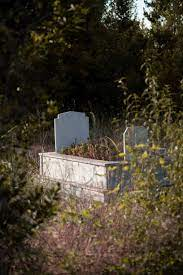

020 8502
6000 (office hours)
07729 707013 (out of office hours)

About Us
5 Pillars Cemetery is the first and the oldest cemetery for Muslims in the San Francisco-Bay Area. Efforts to search for land and establish a Muslim-owned cemetery started around the year 1994–1995. As the Muslim population continues to grow, the need for a Muslim cemetery to complement the funeral services and related facilities at mosques is a priority to ensure that the Islamic traditions of burial are preserved for our families now and in the future.In the Name of Allãh, the Most Beneficent, the Most Merciful
“Truly! To Allãh we belong and truly, to Him we shall return”
(Al-Qur’an, 2:156)
Open 7 days a week including all public and Islamic holidays.